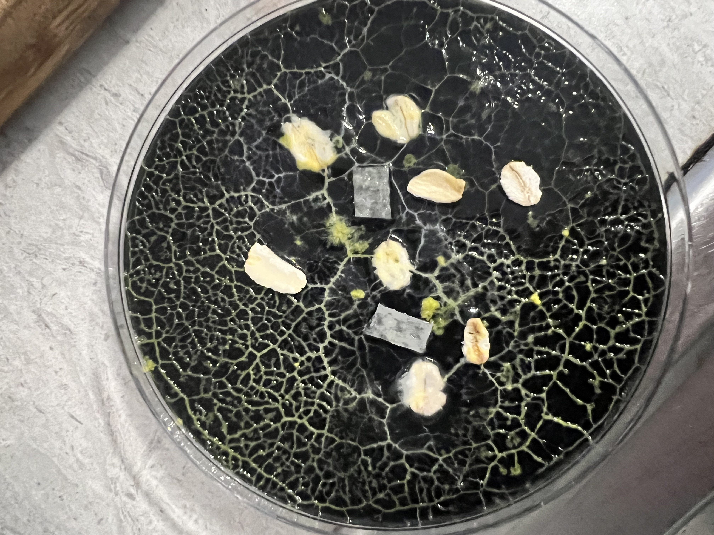

Welcome

Welcome to my home lab notebook. I'm Brian and I'm a software developer. I specialize in various web technologies, research computing, and distributed computing.
This is my place on the Internet to chronicle all the projects I work on. Hopefully others can learn from my experiences and get some help on their own projects.
Software isn't the only thing I do. I'm very interested in rugged computing and sustainable computing. And completely outside the world of technology, I spend way too much time homebrewing sodas.
In addition to these projects, I started Gifford Lake Labs, a software design firm that focuses primarily on web development projects.
Last but certainly not least, I am the proud creator of AltFantasy Sports - a free and ad-free website that allows users to play community fantasy sports for sports leagues that are a bit off the beaten path. I started by supporting new spring American football leagues, and have expanded from there to WNBA, CFL, lacrosse, and soon worldwide cricket.
You can find much, much more information about these and many more of my projects on the Projects page.
Enjoy!